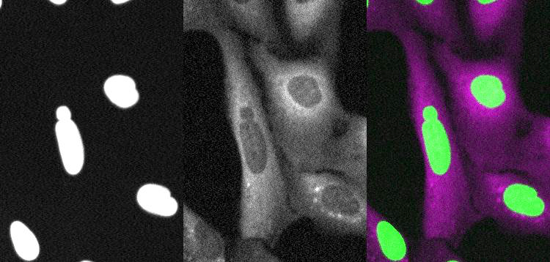
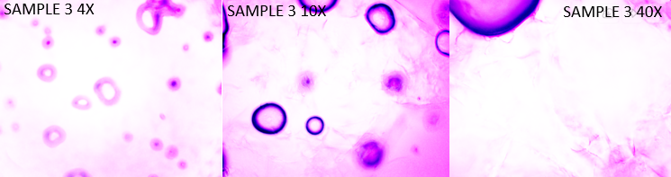

|

Fred Hutch Internship (Hatch Lab)
Still images of U20S NLS-GFP RFP-Cyto shB1 cell line (NLS-GFP/RFP-cyto/merge). Tasked
with finding a cell line with a higher rupture frequency than U2OS, we isolated
MCC13 cells, tested four synchronization drugs, and concluded that, regardless of
drug, MCC13 cells have a greater rupture frequency than U2OS cell lines. The data
collected will be able to better detect rupture events in future screens.
|

SoundBio Lab
Microscope magnifications of 15% wt BSA(pH 3.52) + 250ul NaCl(1M) heated in a water bath at
37 degrees celsius. Throughout my mentorship, I created five hydrogels at different percent
wt BSA and NaCl concentrations; recorded their absorbances at different ratios of NaCl either 1M
or 5M, water, and phenol red, and recorded different hydrogel swelling capacities of my five
main samples. I concluded that with less impurities of NaCl and a greater percent wt BSA,
then the higher swelling capacity the hydrogel had.
|